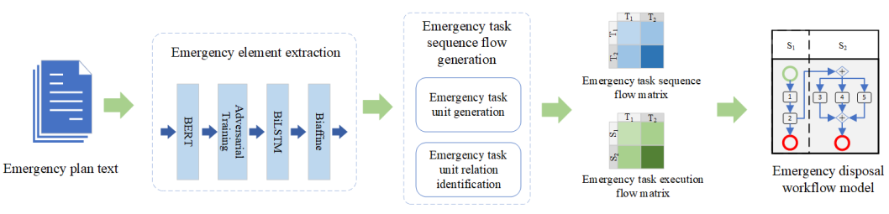

|
Self-paced Dynamic Infinite Mixture Model for Fatigue Evaluation of Pilots’ Brain.
Edmond Qi Wu, Mengchu Zhou, Zhiri Tang, Longjun Zhu, Xu-Yi Qiu, Ping-Yu Deng, Li-Min Zhu, He Ren.
IEEE Transactions on Cybernetics, ESI, 2022.
[Paper] |
 |
Brain-Computer Interface Using Brain Power Map and Cognition Detection Network during Flight
Edmond Qi Wu, Zhengtao Cao, Pengwen Xiong, Aiguo Song, Li-Min Zhu, Mengsun Yu.
IEEE/ASME Transactions on Mechatronics, ESI, 2022.
[Paper] |
 |
Detecting Dynamic Behavior of Brain Fatigue Through 3-D-CNN-LSTM.
Edmond Qi Wu, Pengwen Xiong, Zhiri Tang, Gui-Jiang Li, Aiguo Song, Li-Min Zhu.
IEEE Transactions on Systems, Man, and Cybernetics: Systems, ESI, 2022.
[Paper] |
 |
Scalable Gamma-driven Multilayer Network for Brain Workload Detection Through Functional Near-infrared Spectroscopy.
Edmond Qi Wu, Zhiri Tang, Yuxuan Yao, Xu-Yi Qiu, Peng-Yu Deng, Pengwen Xiong, Aiguo Song, Li-Min Zhu, Mengchu Zhou.
IEEE Transactions on Cybernetics, 2022.
[Paper] |
 |
Non-Parametric Bayesian Prior Inducing Deep Network for Automatic Detection of Cognitive Status.
Edmond Qi Wu, Dewen Hu, Ping-Yu Deng, Zhiri Tang, Yulian Cao, Wen-Ming Zhang, Li-Min Zhu, He Ren.
IEEE Transactions on Cybernetics, 2021.
[Paper] |
Edmond Q. Wu,
 |
Two-Stage OD Flow Prediction for Emergency in Urban Rail Transit.
Guangyu Zhu, Jiacun Ding, Yun Wei, Yang Yi, Sendren Sheng-Dong Xu, Edmond Q. Wu.
IEEE Transactions on Intelligent Transportation Systems, 2023.
[Paper] |
|  |
Extraction of Emergency Elements and Business Process Model of Urban Rail Transit Plans.
Guangyu Zhu, Rongzheng Yang, Edmond Q. Wu, Rob Law.
IEEE Transactions on Computational Social Systems, 2023.
[Paper] |
 |
A Similarity Measurement Method of Normal Cloud Models for the Operational Status Perception and Computing of Urban Rail T.
Guangyu Zhu, Yubo Yang, Ranran Sun, Edmond Q. Wu, Rob Law.
IEEE Transactions on Computational Social Systems, 2022.
[Paper] |
 |
Relationship Extraction Method for Urban Rail Transit Operation Emergencies Records.
Guangyu Zhu, Xinglin Huang, Rongzheng Yang, Ranran Sun.
IEEE Transactions on Intelligent Vehicles, 2022.
[Paper] |
 |
Parallel and Collaborative Passenger Flow Control of Urban Rail Transit under Comprehensive Emergency Situation.
Guangyu Zhu, RanRan Sun, XinNi Sun, Yun Wei, Bo Wu.
IEEE Transactions on Intelligent Vehicles, 2023.
[Paper] |
项目资助
国家基金委项目：
国家自然科学基金面上项目、61671293、飞行员疲劳工作负荷状态识别关键技术研究、2017-01至2020-12、已结题、主持.
国家自然科学民航联合基金、U1933125、飞行员视觉刺激-脑疲劳认知响应耦合机理研究、2020-01至2022-12、进行中、主持.
国家自然科学基金面上项目、62171274、空战对抗过程中的飞行员视觉、操作力与脑认知耦合机理研究、2022-01至2025-12、进行中、主持.
国家自然科学叶企孙联合重点项目、U2241228、空战博弈对抗下的飞行员视觉-脑认知-操作力反馈增强交互机理研究、2023-01至2026-12、进行中、主持.
其他项目:
上海市浦江人才计划A类、飞行员疲劳状态识别与预警技术、2015-07至2017-06、已结题、主持.
航天科学技术基金项目、脑控空天往返飞机-接口研究、2020-01至2020-12、已结题、主持.
中央某委预研重点实验室基金项目、飞行器抗干扰导航与控制方法、2019-01至2020-12、已结题、主持.
中央某委装备预研重点实验室基金项目、飞行员视觉刺激-脑疲劳认知响应关联技术研究、2020-01至2021-12、进行中、主持.
中央某委GF创新特区项目、基于视觉反馈的飞行员感知认知技术研究-面向典型任务场景的飞行员生理认知综合分析模型研究、2020-12至2022-12、进行中、主持.
上海脑计划、脑机接口算法研究、2022-01至2024-12、进行中、主持.
空军医学重大专项，航空医学重大问题提升飞行人员作战效能、2022-01至2024-12、进行中、主持.
中央某委GF创新特区项目、应急条件下的基于飞行员认知状态的人机协同决策方法研究、2022-10至2024-12、进行中、主持.
国防科工局基础科研项目、基于深度学习-分数阶模型的脑机融合智能系统、2023-01至2024-12、进行中、合作申请人.
某重大型号任务、重大型号编队空中加油项目、进行中，主持.
社会服务
- Associate Editor: IEEE Transactions on Intelligent Transportation Systems (T-ITS), 2021-
- Associate Editor: IEEE Transactions on Intelligent Vehicles (T-IV), 2022-
- Associate Editor: IEEE Transactions on Cognitive and Developmental Systems (T-CDS), 2022-
- Associate Editor: IEEE Transactions on Medical Robotics and Bionics (T-MRB), 2022-
- Associate Editor: IEEE Transactions on Systems, Man, and Cybernetics: Systems (T-SMCA), 2022-
- Associate Editor: IEEE Transactions on Industrial Cyber-Physical Systems (T-ICPS), 2023-
- Youth Editor: The Innovation (Cell合作期刊), 2022-
- Guest editor: Special Issue on Hybrid Brain-Computer Collaborative Intelligent System, IEEE Transactions on Cognitive and Developmental Systems, 2021.
- Guest editor: 脑机接口与人机交互，电子与信息学报, 2021.
- Guest editor: "脑-行为”一致性提升人机协作效能，电子与信息学报, 2022.
- 客座专家，中国航空无线电研究所人机交互领域，2019-
- 上海市普陀区城市运营中心，副主任（挂职），2020.08-2021.08
- 上海神经科学学会航空神经认知工效分会主任
- 教育部长江学者评审专家
社会服务
- Associate Editor: IEEE Transactions on Intelligent Transportation Systems (T-ITS), 2021-
- Associate Editor: IEEE Transactions on Intelligent Vehicles (T-IV), 2022-
- Associate Editor: IEEE Transactions on Cognitive and Developmental Systems (T-CDS), 2022-
- Associate Editor: IEEE Transactions on Medical Robotics and Bionics (T-MRB), 2022-
- Associate Editor: IEEE Transactions on Systems, Man, and Cybernetics: Systems (T-SMCA), 2022-
- Associate Editor: IEEE Transactions on Industrial Cyber-Physical Systems (T-ICPS), 2023-
- Youth Editor: The Innovation (Cell合作期刊), 2022-
- Guest editor: Special Issue on Hybrid Brain-Computer Collaborative Intelligent System, IEEE Transactions on Cognitive and Developmental Systems, 2021.
- Guest editor: 脑机接口与人机交互，电子与信息学报, 2021.
- Guest editor: "脑-行为”一致性提升人机协作效能，电子与信息学报, 2022.
- 客座专家，中国航空无线电研究所人机交互领域，2019-
- 上海市普陀区城市运营中心，副主任（挂职），2020.08-2021.08
- 上海神经科学学会航空神经认知工效分会主任
- 教育部长江学者评审专家
奖励与荣誉
- 上海市浦江人才计划A类
- 中央某委源创怀优胜奖
- IEEE优秀论文奖
- 中国商飞国际科技周优秀论文奖
- 2021年度和2022年度"电子与信息学报"优秀编委
- 香港政府博士后fellowship
- 第三批中国博士后特别资助